長期トレンド
JKMとJEPXシステムプライスの推移グラフ
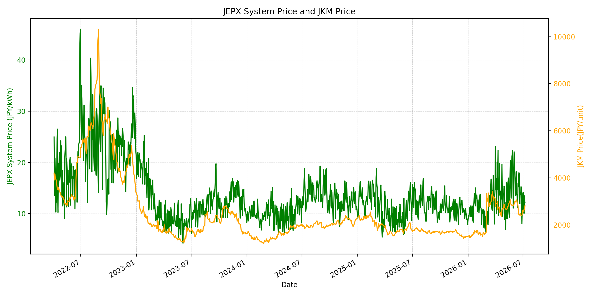
WTIの推移グラフ
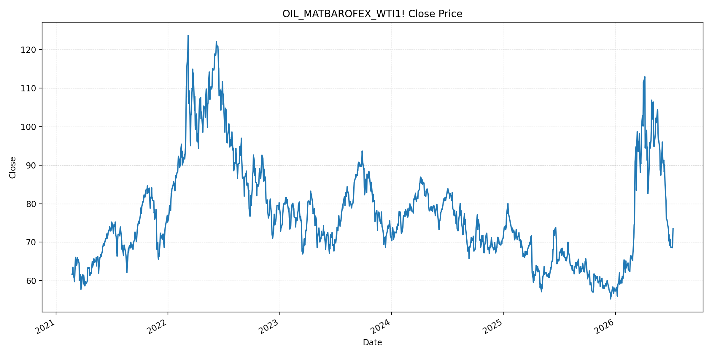
JEPXエリアプライスグラフ（直近一年分）
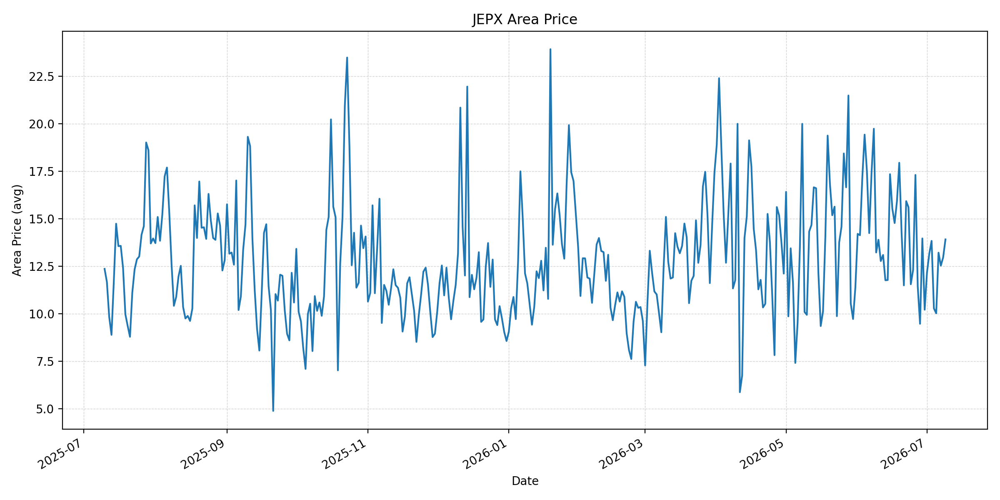
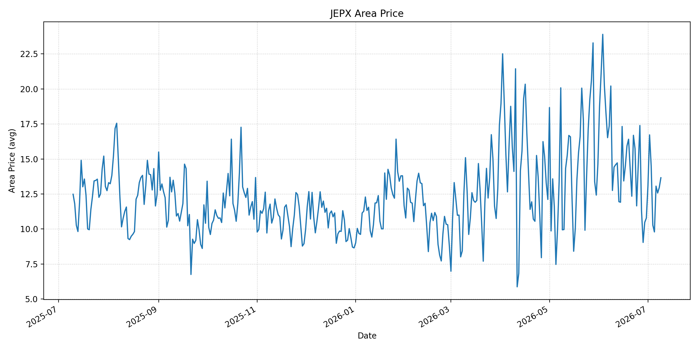
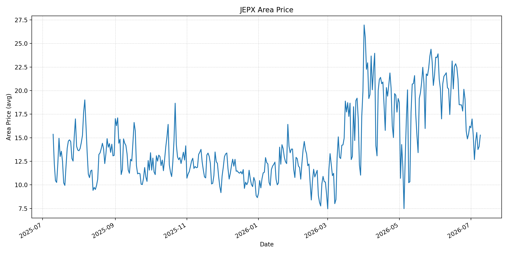
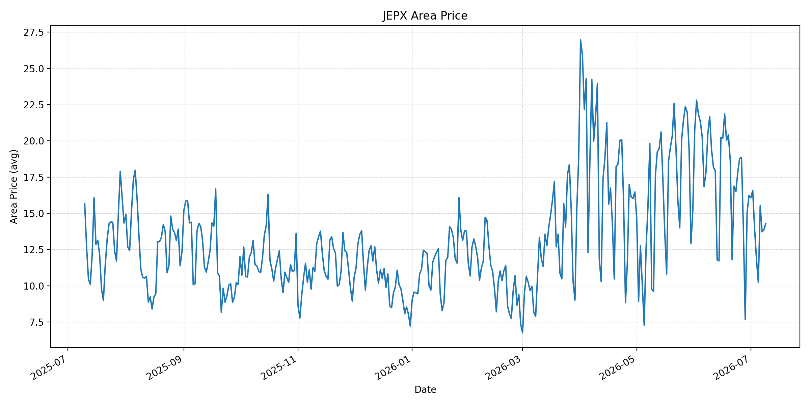
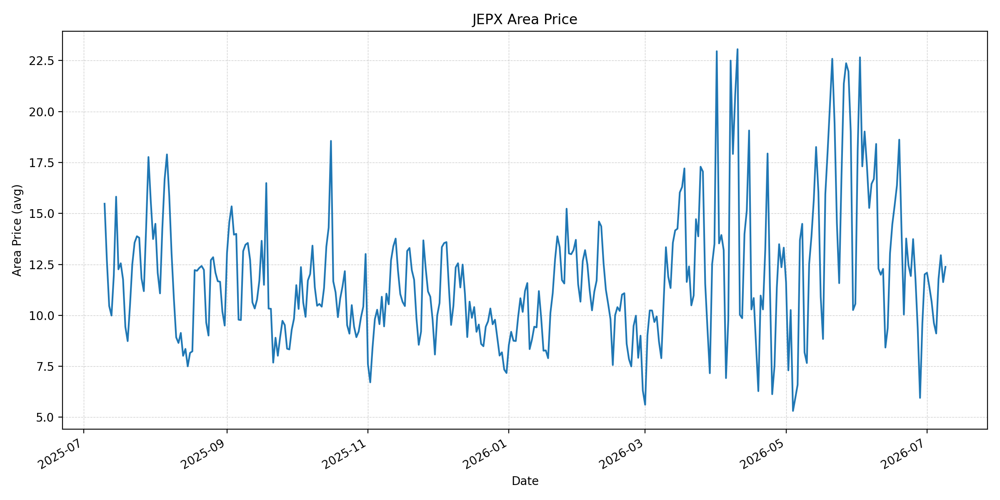
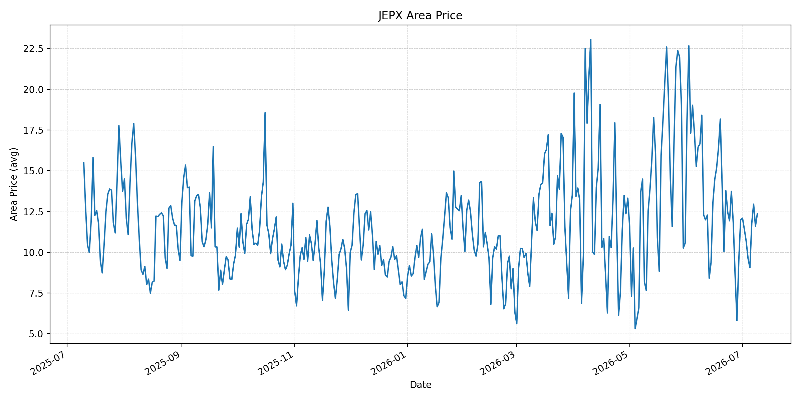
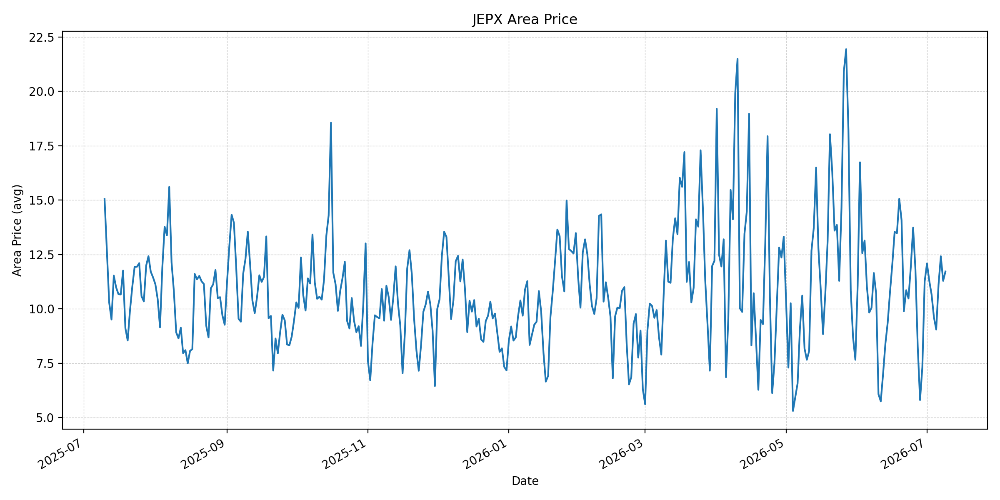
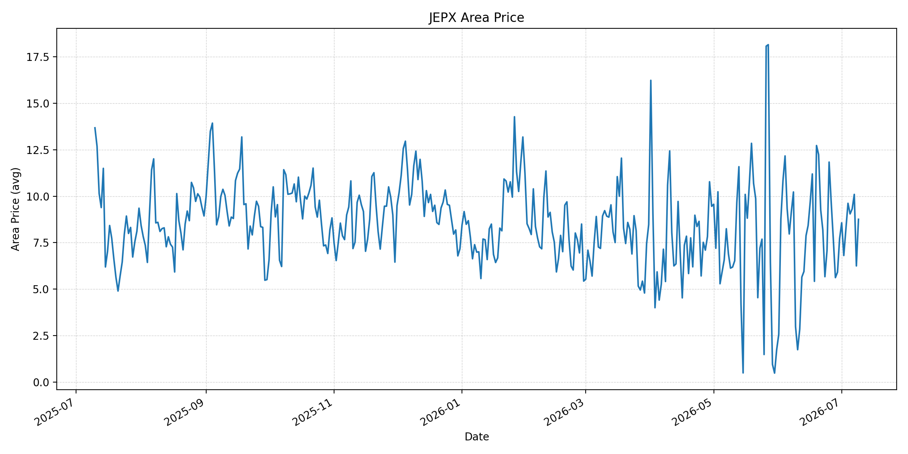
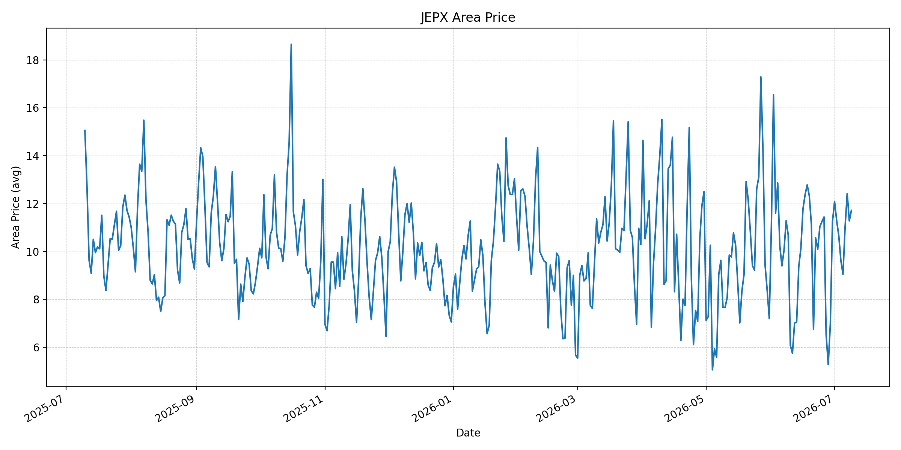
短期トレンド
JKMとJEPXシステムプライスの推移グラフ
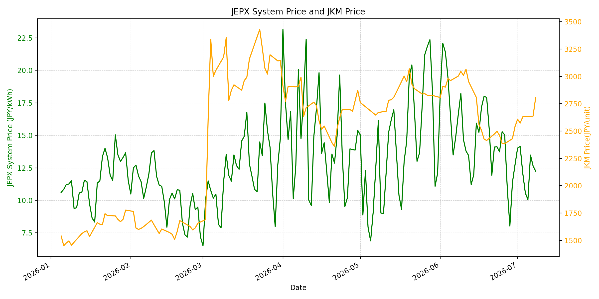
WTIの推移グラフ
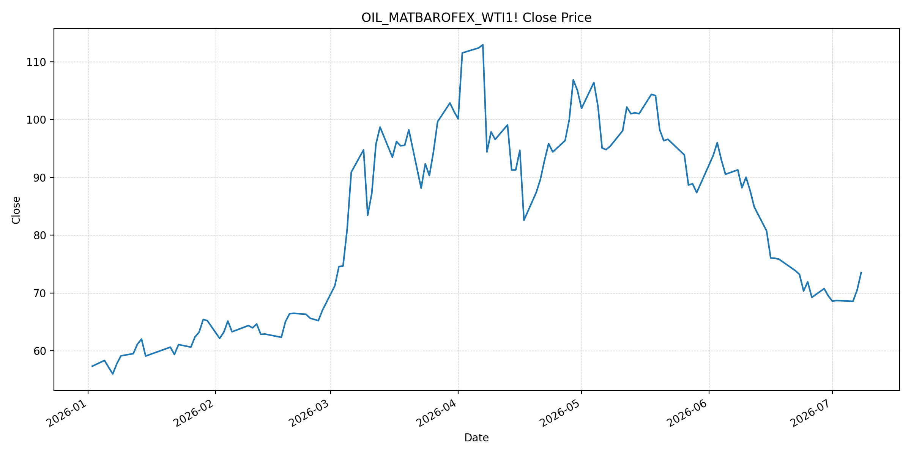
JEPXシステムプライス
JEPXは受渡日ベースの最新非空値で評価しています。最新値は 2026-07-09 分です。先週終値は 2026-07-02 時点の直近値、先月終値は 2026-06-30 時点の直近値で評価しています。
| エリア | 当日価格 | 前日価格 | 前日比（％） | 先週終値 | 先週比（％） | 先月終値 | 先月比（％） | 過去最高値 | 最高値比（％） |
|---|---|---|---|---|---|---|---|---|---|
| システム | 13.07 | 12.25 | 6.69 | 14.14 | -7.57 | 12.73 | 2.67 | 64.06 | -79.60 |
| 北海道 | 13.91 | 12.96 | 7.33 | 13.16 | 5.70 | 10.21 | 36.24 | 73.92 | -81.18 |
| 東北 | 13.66 | 12.96 | 5.40 | 16.72 | -18.30 | 10.78 | 26.72 | 84.92 | -83.91 |
| 東京 | 15.28 | 14.06 | 8.68 | 16.99 | -10.06 | 16.23 | -5.85 | 86.13 | -82.26 |
| 中部 | 14.29 | 13.87 | 3.03 | 16.58 | -13.81 | 16.23 | -11.95 | 52.06 | -72.55 |
| 北陸 | 12.38 | 11.63 | 6.45 | 11.42 | 8.41 | 12.01 | 3.08 | 46.48 | -73.37 |
| 関西 | 12.35 | 11.61 | 6.37 | 11.41 | 8.24 | 12.00 | 2.92 | 46.48 | -73.43 |
| 中国 | 11.72 | 11.29 | 3.81 | 11.29 | 3.81 | 11.26 | 4.09 | 46.48 | -74.79 |
| 四国 | 8.76 | 6.25 | 40.16 | 6.81 | 28.63 | 7.72 | 13.47 | 46.48 | -81.16 |
| 九州 | 11.72 | 11.28 | 3.90 | 11.29 | 3.81 | 11.24 | 4.27 | 40.54 | -71.09 |
LNG先物価格
最新値は 2026-07-08 の LNG(close) です。先週終値は 2026-07-01 時点の直近値、先月終値は 2026-06-30 時点の直近値で評価しています。
| 当日価格 | 前日価格 | 前日比（％） | 先週終値 | 先週比（％） | 先月終値 | 先月比（％） | 過去最高値 | 最高値比（％） |
|---|---|---|---|---|---|---|---|---|
| 2805.00 | 2637.00 | 6.37 | 2609.00 | 7.51 | 2541.00 | 10.39 | 10319.00 | -72.82 |
石油先物価格
最新値は 2026-07-08 の OIL(close) です。先週終値は 2026-07-01 時点の直近値、先月終値は 2026-06-30 時点の直近値で評価しています。
| 当日価格 | 前日価格 | 前日比（％） | 先週終値 | 先週比（％） | 先月終値 | 先月比（％） | 過去最高値 | 最高値比（％） |
|---|---|---|---|---|---|---|---|---|
| 73.52 | 70.44 | 4.37 | 68.58 | 7.20 | 69.50 | 5.78 | 123.70 | -40.57 |
ニュース
イラン情勢に関するニュース
- 2026年7月8日、Axiosは、米軍がホルムズ海峡周辺のイラン軍事標的80カ所超を攻撃し、イラン軍が「圧倒的な対応」を警告したと報じました。攻撃対象は防空、沿岸監視、対艦ミサイル、ドローン、港湾施設に及び、停戦覚書の実効性はさらに低下しています。 参照: Axios, 2026-07-08
- APは、トランプ大統領がイランとの停戦終了を宣言し、イランによる商船攻撃と湾岸の米軍拠点攻撃を受けて燃料価格への不安が再燃したと報じました。米戦略石油備蓄は2026年7月3日時点で3億1950万バレルと低く、価格抑制余地は限定的です。 参照: AP, 2026-07-09
ホルムズ海峡経由の石油・LNGに関するニュース
- Guardianは、イランによる少なくとも3隻のタンカー攻撃を受け、Brentが約6％上昇して80ドル超となり、LNGを積んだ船舶も攻撃対象に含まれたと報じました。少なくとも4隻の石油・ガスタンカーが通航を断念して反転しています。 参照: Guardian, 2026-07-09
- APは、ホルムズ海峡のタンカー通航が「実質的に停止」したとのRystad Energyの見方を伝えました。一方、Kplerは7月8日に41件、前日に36件の通航を確認しており、一部船舶は位置情報を切って通航している可能性があります。 参照: AP, 2026-07-09
ホルムズ海峡経由でない石油・LNGに関するニュース
- MarketWatchは、米国とイランの交戦再開でBrentが76ドル超、WTIが73ドル超となり、いずれも6月23日以来の高値圏に入ったと報じました。イランの石油販売制限再開も供給制約として意識されています。 参照: MarketWatch, 2026-07-09
- Guardianは、代替航路、影響を受けない産油国の増産、緊急備蓄放出、浮体在庫に関する制裁猶予により、当初想定された日量2000万バレルの供給喪失は実質日量310万バレル程度に縮小したとの市場分析を伝えました。 参照: Guardian, 2026-07-09
日本国内のイラン戦争に関係するニュース
- 過去24時間で、JEPX制度、国内電力需給ルール、または日本政府の対イラン戦争関連対策を直接変更する主要な新規公表は確認できませんでした。
- 関連する国内材料として、経済産業省は2026年5月20日、2026年度夏季は全エリアで安定供給に最低限必要な予備率3％を確保できるため節電要請を実施しないと発表しています。一方で、国際情勢の変化、異常気象、火力発電所の集中はリスクとして明記されています。 参照: 経済産業省, 2026-05-20
インサイト
ニュース事項による日本の電力市場への影響（短期：数日〜1週間）
- JEPXシステムプライスは 13.07 円/kWhで前日比 6.69% と上昇しましたが、先週比は -7.57% です。東京は 15.28 円/kWhで前日比 8.68%、四国は 8.76 円/kWhで 40.16% 上昇し、燃料高と地域需給が一部エリアに出始めています。
- OILは 73.52 で前日比 4.37%、先週比 7.20% と明確に反発しました。ホルムズ通航の安全性低下と米イラン交戦再開は、数日〜1週間の燃料費・リスクプレミアムを押し上げる材料です。
- LNGは 2805.00 で前日比 6.37%、先週比 7.51% です。LNG船が攻撃対象に含まれたとの報道は、日本のLNG調達心理に直接響きやすく、短期的にはJEPXの下値を支える方向です。
ニュース事項による日本の電力市場への影響（長期：1ヶ月〜半年）
- 代替航路、非影響国の増産、備蓄放出が続けば、OILは過去最高値比 -40.57%、LNGは -72.82% と過去高値からはなお低位です。長期の燃料費上昇は、ホルムズ停止が長期化するかどうかに依存します。
- ただし、停戦終了と80カ所超への米軍攻撃は、60日間の安定化シナリオを弱めます。1ヶ月〜半年では、通航保険、航路承認、イラン産油輸出制限が再び強まれば、燃料本体価格より物流・保険費がJEPXの上振れ要因になります。
- 国内では節電要請なしの前提が維持されていますが、北海道は先月比 36.24%、東北は 26.72% と高く、夏季需要と地域別供給力の差が残ります。燃料高が続く場合、広域価格より先に地域価格のばらつきとして表れやすいです。